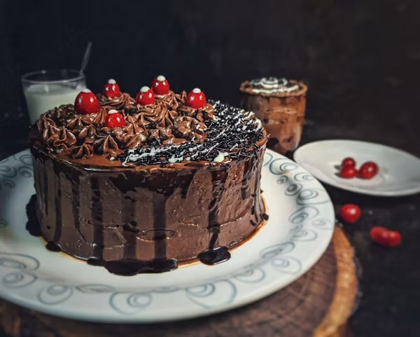

Cake
Home

Description
Vanilla cake is a soft and fluffy dessert that is perfect for birthdays, celebrations, or enjoying with a cup of tea. It is easy to prepare and can be decorated with frosting or served plain.
Ingredients
- 2 cups all-purpose flour
- 1½ teaspoons baking powder
- ½ teaspoon salt
- 1 cup sugar
- ½ cup butter
- 2 eggs
- 1 teaspoon vanilla extract
- 1 cup milk
Steps
- Preheat the oven to 180°C (350°F).
- Mix the flour, baking powder, and salt in a bowl.
- Cream the butter and sugar until light and fluffy.
- Add the eggs one at a time, then stir in the vanilla extract.
- Gradually add the dry ingredients and milk, mixing until smooth.
- Pour the batter into a greased baking tin.
- Bake for 30–35 minutes or until a toothpick comes out clean.
- Allow the cake to cool before serving or decorating.